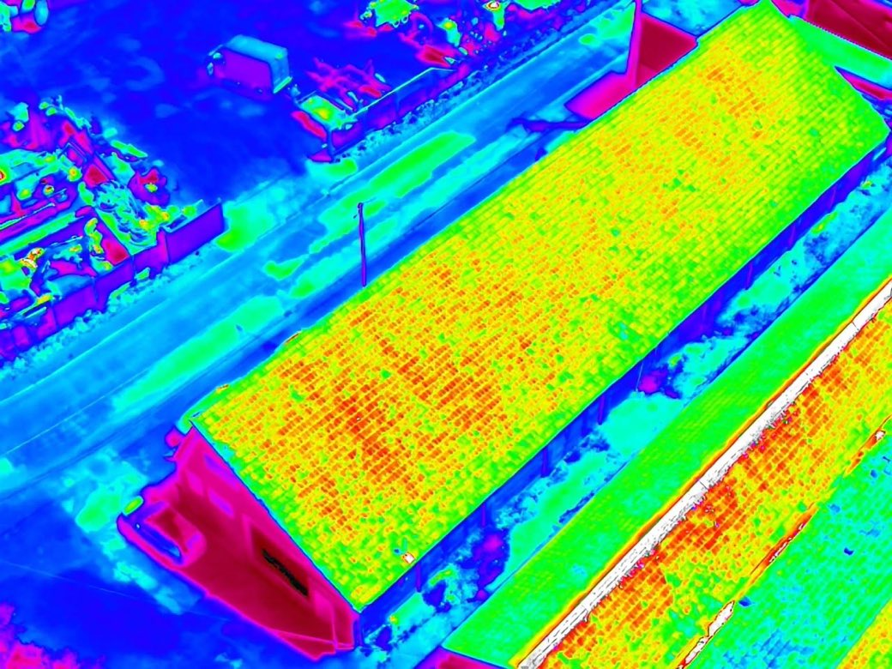

01
Diagnostic thermique
toiture & enveloppe
Syndics de copropriété · Gestionnaires de patrimoine · Artisans du bâtiment
Depuis 2026, toutes les copropriétés doivent disposer d'un Plan Pluriannuel de Travaux. Reste à savoir par où commencer.
Le vol thermique rend visibles les déperditions de chaleur, les infiltrations et les points faibles de la toiture. Vous engagez les travaux sur un constat, pas sur une intuition — et vous disposez d'un document daté pour appuyer un dossier après sinistre.
Livrable Vol thermique et zoom haute définition, rapport PDF avec zones annotées et niveau de criticité, remis sous 48 à 72 h.
- Capteur
- DJI Matrice 4T
- Rendu
- Rapport PDF annoté
- Délai
- 48 à 72 h
À partir de490 €
Demander un diagnostic